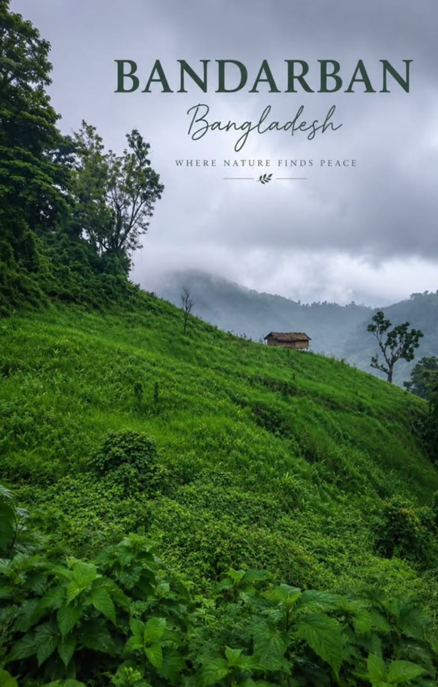
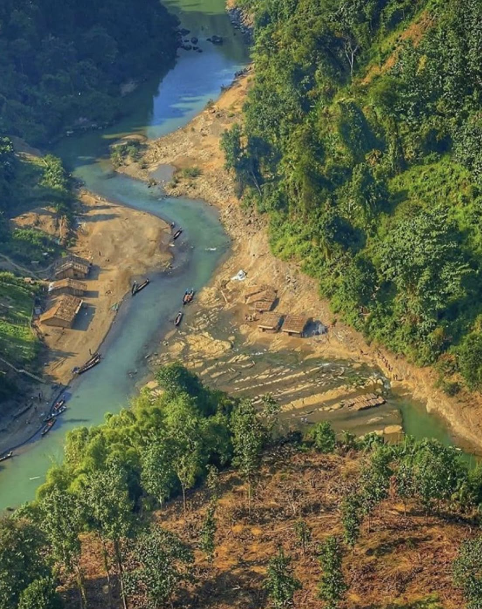
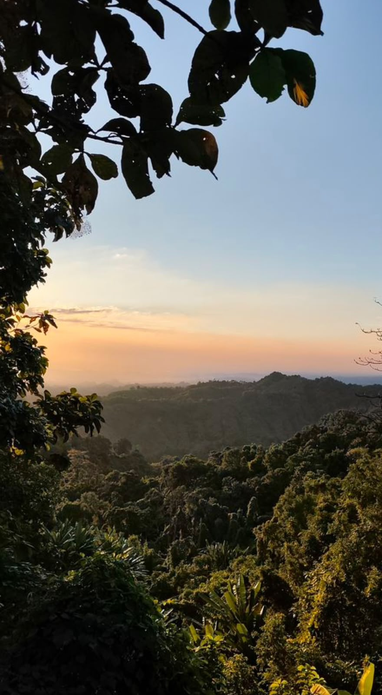

Bandarban is one of the most beautiful hill districts in Bangladesh. It is famous for its green mountains, waterfalls, rivers, and peaceful natural environment. It is one of my favorite travel destinations.


